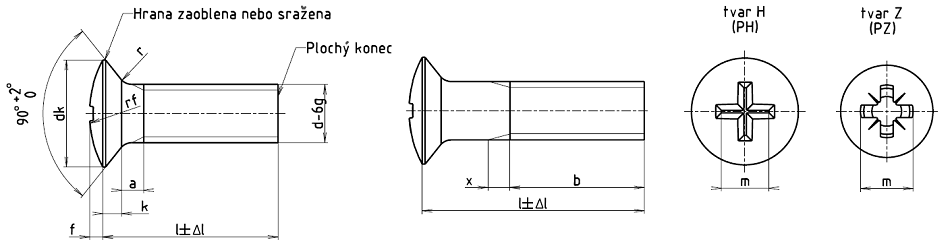

Příklad označení šroubu s čočkovitou hlavou se závitem M5, jmenovité délky l = 20 mm, pevnostní třídy 4.8, s křížovou drážkou tvaru Z:
ŠROUB S ČOČKOVITOU HLAVOU ISO 7047 - M5 ×20 – 4.8 – Z
| Závit | M1,6 | M2 | M2,5 | 3 | (M3,5) | M4 | M5 | M6 | M8 | M10 | ||
|---|---|---|---|---|---|---|---|---|---|---|---|---|
| rozteč P | 0,35 | 0,4 | 0,45 | 0,5 | 0,6 | 0,7 | 0,8 | 1 | 1,25 | 1,5 | ||
| amax.1) | 0,7 | 0,8 | 0,9 | 1 | 1,2 | 1,4 | 1,6 | 2 | 2,5 | 3 | ||
| bmin. | 25 | 25 | 25 | 25 | 38 | 38 | 38 | 38 | 38 | 38 | ||
| dkteoretický | 3,6 | 4,4 | 5,5 | 6,3 | 8,2 | 9,4 | 10,4 | 12,6 | 17,3 | 20 | ||
| dk max.1) | 3 | 3,8 | 4,7 | 5,5 | 7,3 | 8,4 | 9,3 | 11,3 | 15,8 | 18,3 | ||
| dk min.1) | 2,7 | 3,5 | 4,4 | 5,2 | 6,94 | 8,04 | 8,94 | 10,87 | 15,37 | 17,78 | ||
| f≈ | 0,4 | 0,5 | 0,6 | 0,7 | 0,8 | 1 | 1,2 | 1,4 | 2 | 2,5 | ||
| k1) | 1 | 1,2 | 1,5 | 1,65 | 2,35 | 2,7 | 2,7 | 3,3 | 4,65 | 5 | ||
| rmax. | 0,4 | 0,5 | 0,6 | 0,8 | 0,9 | 1 | 1,3 | 1,5 | 2 | 2,5 | ||
| rf ≈ | 3 | 4 | 5 | 6 | 8,5 | 9,5 | 9,5 | 12 | 16,5 | 19,5 | ||
| cmax. | 0,9 | 1 | 1,1 | 1,25 | 1,5 | 1,75 | 2 | 2,5 | 3,2 | 3,8 | ||
| Křížová drážka | Velikost kříž. drážky | 0 | 1 | 2 | 3 | 4 | ||||||
| Tvar H | mpomocný rozměr | 1,9 | 2 | 3 | 3,4 | 4,8 | 5,2 | 5,4 | 7,3 | 9,6 | 10,4 | |
| hloubkamax. | 1,2 | 1,5 | 1,85 | 2,2 | 2,75 | 3,2 | 3,4 | 4,0 | 5,25 | 6,0 | ||
| hloubkamin. | 0,9 | 1,2 | 1,5 | 1,8 | 2,25 | 2,7 | 2,9 | 3,5 | 4,75 | 5,5 | ||
| Tvar Z | mpomocný rozměr | 1,9 | 2,2 | 2,8 | 3,1 | 4,6 | 5 | 5,3 | 7,1 | 9,5 | 10,3 | |
| hloubkamax. | 1,20 | 1,40 | 1,75 | 2,08 | 2,70 | 3,10 | 3,35 | 3,85 | 5,20 | 6,05 | ||
| hloubkamin. | 0,95 | 1,15 | 1,50 | 1,83 | 2,25 | 2,65 | 2,90 | 3,40 | 4,75 | 5,60 | ||
| Délka l |
Mezní úchylka ±Δl |
M1,6 | M2 | M2,5 | M3 | (M3,5) | M4 | M5 | M6 | M8 | M10 |
|---|---|---|---|---|---|---|---|---|---|---|---|
| Informativní hmotnost 1000 šroubů [kg] | |||||||||||
| 3 | 0,20 | 0,067 | 0,119 | 0,212 | |||||||
| 4 | 0,24 | 0,078 | 0,138 | 0,242 | 0,351 | ||||||
| 5 | 0,24 | 0,090 | 0,156 | 0,272 | 0,395 | 0,669 | 0,99 | ||||
| 6 | 0,24 | 0,102 | 0,175 | 0,302 | 0,439 | 0,729 | 1,07 | 1,49 | |||
| 8 | 0,29 | 0,125 | 0,212 | 0,362 | 0,527 | 0,849 | 1,23 | 1,73 | 2,79 | ||
| 10 | 0,29 | 0,145 | 0,249 | 0,422 | 0,615 | 0,969 | 1,39 | 1,97 | 3,14 | 6,89 | |
| 12 | 0,35 | 0,165 | 0,287 | 0,482 | 0,703 | 1,09 | 1,54 | 2,21 | 3,49 | 7,53 | 11,4 |
| 14 | 0,35 | 0,185 | 0,325 | 0,543 | 0,791 | 1,21 | 1,70 | 2,45 | 3,84 | 8,17 | 12,5 |
| 16 | 0,35 | 0,205 | 0,362 | 0,603 | 0,879 | 1,33 | 1,85 | 2,69 | 4,19 | 8,81 | 13,5 |
| 20 | 0,42 | 0,436 | 0,723 | 1,060 | 1,57 | 2,17 | 3,17 | 4,89 | 10,1 | 16,5 | |
| 25 | 0,42 | 0,874 | 1,280 | 1,87 | 2,56 | 3,77 | 5,77 | 11,7 | 18,0 | ||
| 30 | 0,42 | 1,500 | 2,17 | 2,95 | 4,37 | 6,64 | 13,3 | 20,6 | |||
| 35 | 0,5 | 2,47 | 3,34 | 4,97 | 7,52 | 14,9 | 23,1 | ||||
| 40 | 0,5 | 3,73 | 5,57 | 8,39 | 16,5 | 25,6 | |||||
| 45 | 0,5 | 6,16 | 9,27 | 18,1 | 28,1 | ||||||
| 50 | 0,5 | 6,76 | 10,1 | 19,7 | 30,7 | ||||||
| 55 | 0,95 | 11,0 | 21,3 | 33,2 | |||||||
| 60 | 0,95 | 11,9 | 22,9 | 35,7 | |||||||
| Materiál | Oceli | Antikorozní oceli | Neželezné kovy | |
|---|---|---|---|---|
| Všeobecné požadavky | Mezinárodní norma | ISO 8992 | ||
| Mechanické vlastnosti | Pevnostní třída | 4.8 | A2–50, A2–70 | — |
| Mezinárodní normy | ISO 898-1 | ISO 3506 | ISO 8839 | |
| Mezní rozměry, tolerance tvaru a polohy | Výrobní třída | A | ||
| Mezinárodní norma | ISO 4759-1 | |||
| Křížová drážka | Mezinárodní norma | ISO 4757 | ||
| Povrch | hladký Požadavky na elektrolyticky vyloučené povlaky viz ISO 4042. Jiná povrchová ochrana dle dohody. Jesltiže je požadována jiná povrchová ochrana, musí být dohodnuta mezi dodavatelem a odběratelem. Mezní hodnoty povrchových vad viz ISO 6157-1 a ISO 6157-3 |
|||